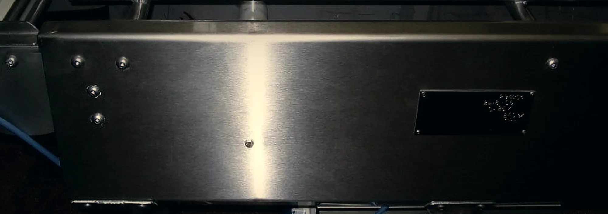
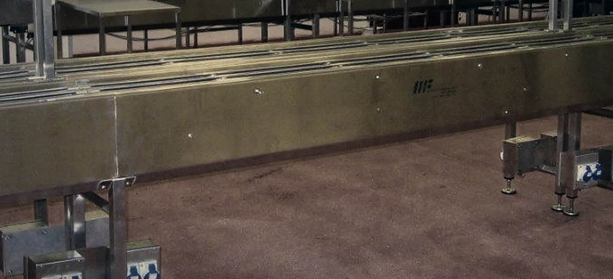
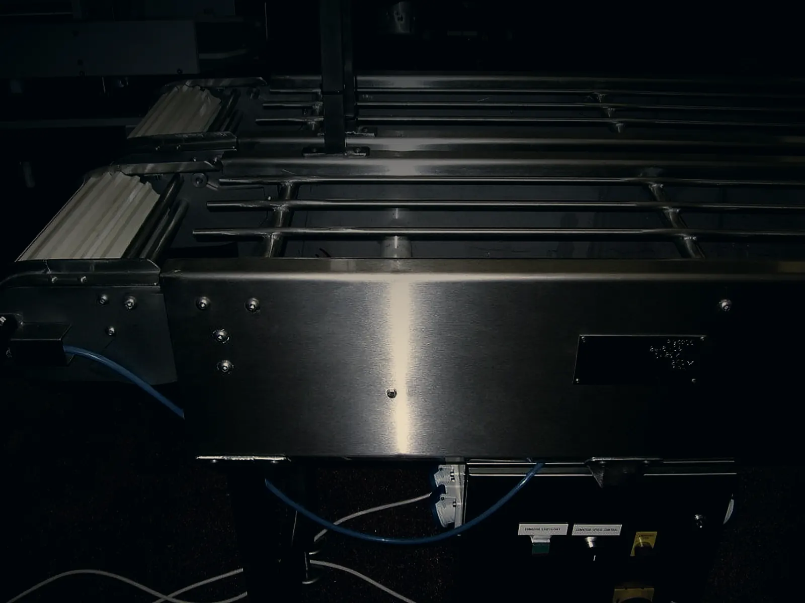

Sheet metal fabricators, Glasgow
Fabricated into place.
Marpet design, manufacture and install stainless steel, mild steel and aluminium fabrication, in the workshop or on site.
Marpet photographs, colour graded.
How Marpet works
One firm from drawing to fitted on site.
-

01
Designed
Marpet designs the work, or makes it to your design.
Our services -

02
Made in the workshop
Made by skilled, time served tradesmen in the fabrication workshop.
About Marpet -

03
Installed on site
Fitted at your premises, from a single table to a complete production line.
Completed work

About Marpet
Stainless steel work for production floors
Marpet Fabrications has built a reputation for quality across sheet metal, engineering and fabrication, with a client base across Scotland and the North of England.
The work is made by skilled, time served tradesmen, either in the fabrication workshop or on site at client premises.
Marpet Fabrications (1997) Ltd was incorporated in 1997 and works from Clyde Workshops, to the east of Glasgow.
About Marpet


Who we work for
Customers
Some of the companies Marpet works for.
- Warburtons Bread Bakery
- Diageo Whisky Distillery
- Barrs Soft Drinks
- Lightbody Celebration Cakes
- Lees of Scotland
- Aulds Delicious Desserts
- Pinneys of Annan
- Walter Black Foods
- Scotbeef
- Vion (formerly Grampian)
Fabrication and machining
Need it machined as well?
JNR Engineering, Hamilton
JNR Engineering is Marpet's sister company. It does CNC milling, CNC turning and water jet profiling in Hamilton, with its own quotes and its own contact details.
Current work
Connect with Marpet on LinkedIn
Current jobs, new work and workshop news are posted on Marpet's LinkedIn page.
Have a drawing or a line to fit out?
Tell us what you need made and where it is going. Marpet will come back to you.